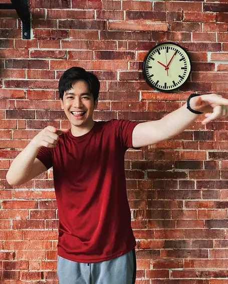
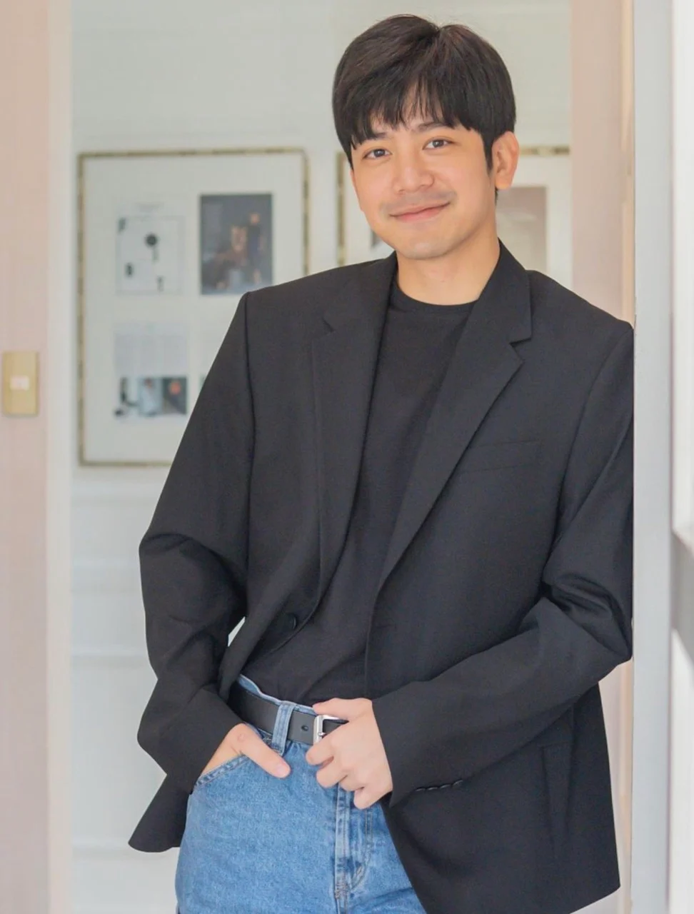
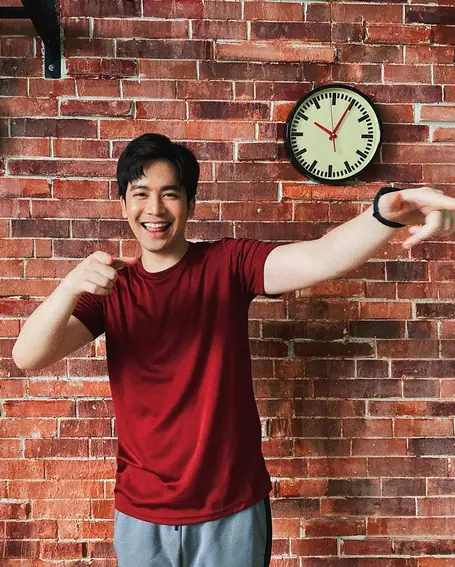
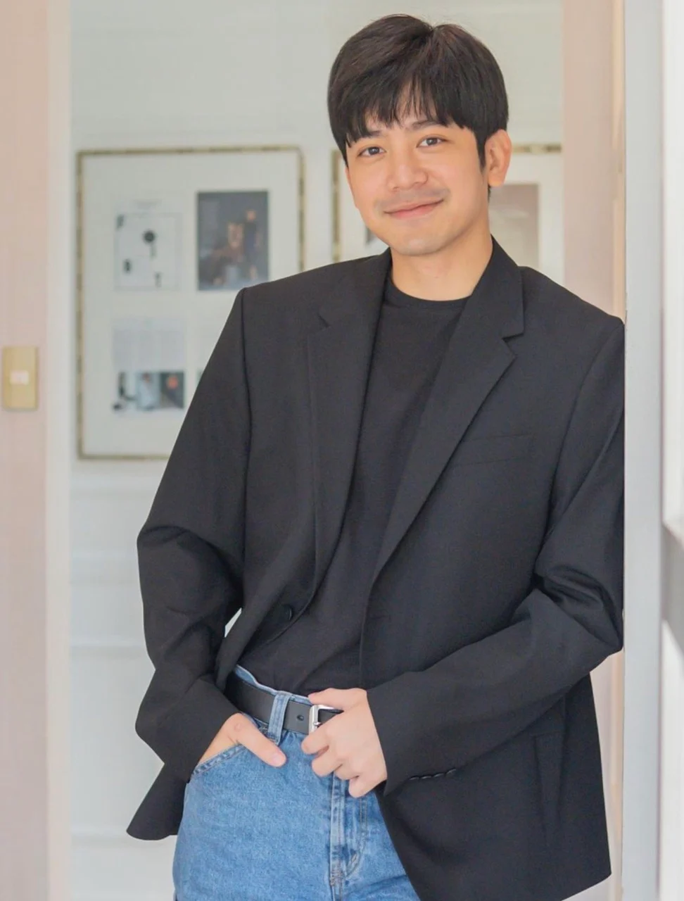
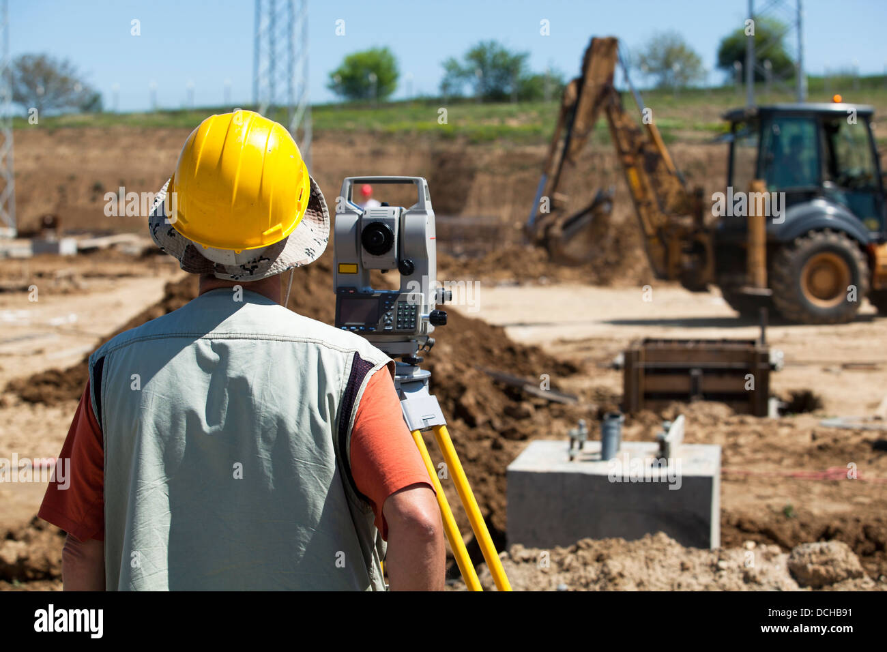
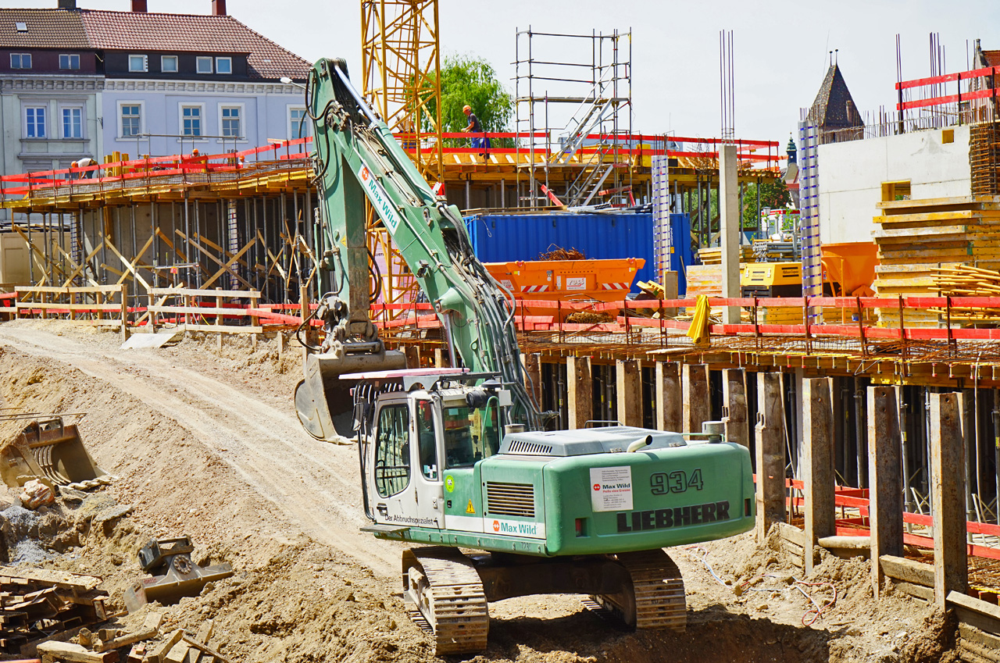
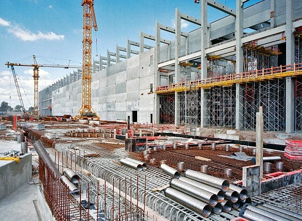
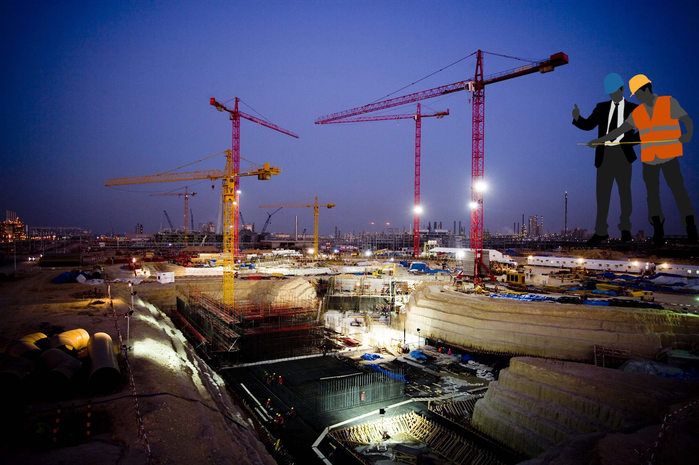
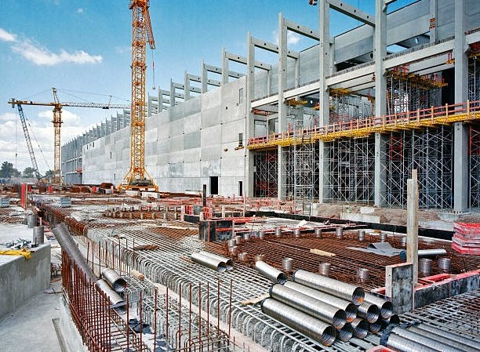
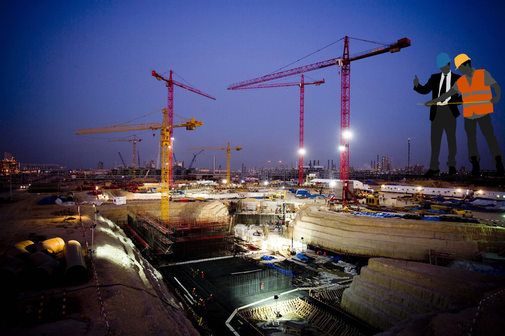

Joshua Garcia is a Filipino actor, dancer, singer, and model. He became famous when he joined
the ABS-CBN reality show Pinoy Big Brother (PBB) – All In edition in 2014.
Joshua Garcia


 




MY DREAM JOB
Engineers are the persons that specially trained to design and build machines, structures, and other things, including bridges, roads, vehicles, and buildings.
They possess the skills and knowledge to analyze complex problems and develop innovative solutions.
SITE ENGINEER
This is the job that I want to pursue in the future not only because it sounds nice but because it is a privillage for us as a women to work in this industry, i know that Being a woman in engineering can be quit challenging because people most likely think that I'm the minority which can lead to a lack of confidence due to feeling out of place and like you don’t quite fit in.There are definitely some challenges for a woman pursuing a career in a male-dominated field.
As the study says that Understanding the challenges facing women in Engineering has always been key to improving how many women are attracted to the profession, and how well the industry can retain them. The new study in the journal Work and Occupations is helpful in highlighting issues the sector will need to tackle. The study concludes that women who embark on careers in engineering are much less likely to stay within the industry than males as a result of being given less challenging problems during team-based work initiatives, particularly within internships.
 
 


